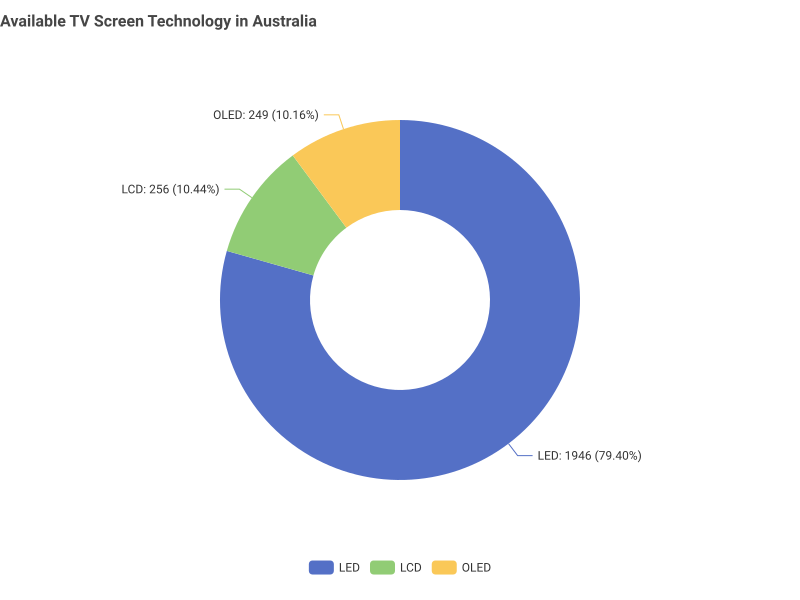
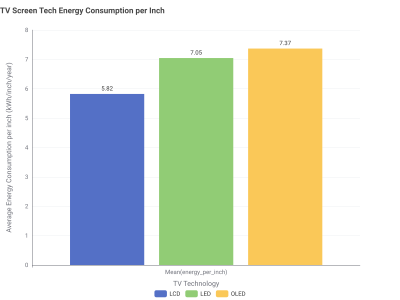
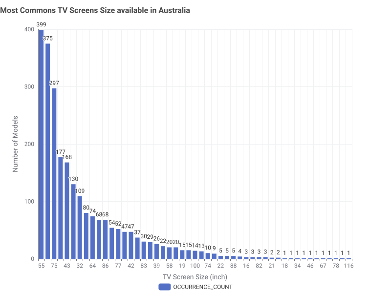
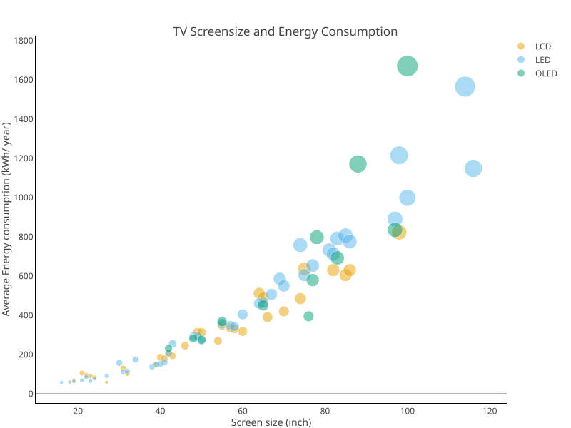
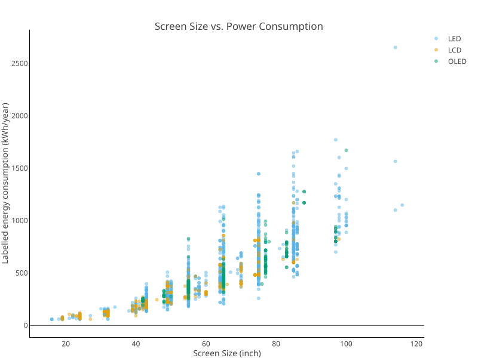
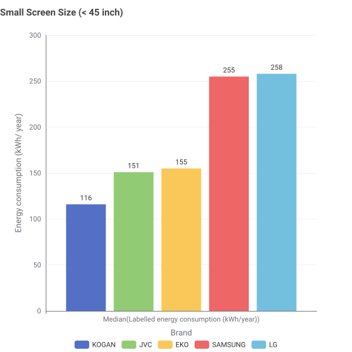
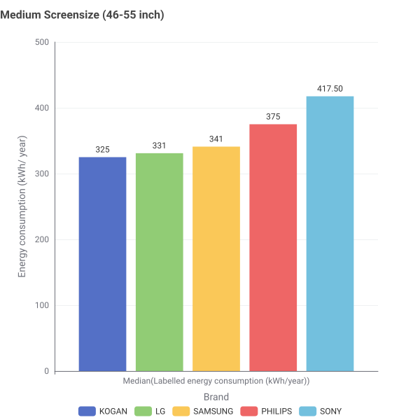
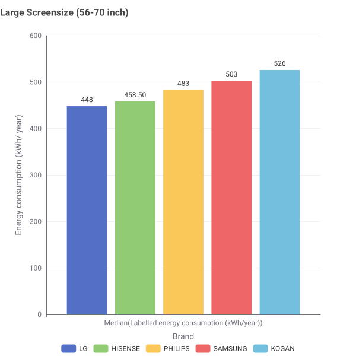
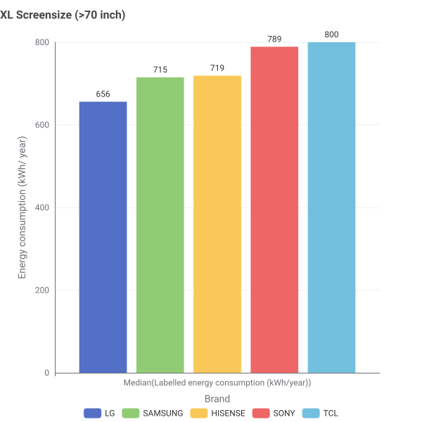
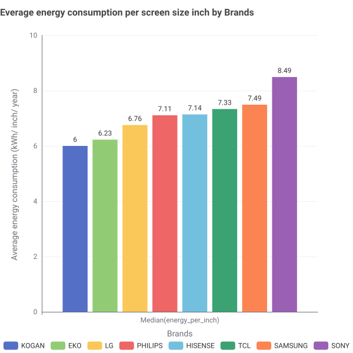

PowerTech - Energy Efficient Appliances
Welcome to PowerTech Australia
PowerTech is Australia's leading provider of energy-efficient television solutions. We specialise in helping Australian households reduce their energy consumption while enjoying premium entertainment technology.
Did You Know?
The average Australian household spends $2,400 per year on electricity. Televisions account for approximately 8-12% of total household energy consumption. Choosing an energy-efficient TV can save you up to $200 annually on your electricity bill.
Australian Energy Market Overview
Australia has some of the highest electricity prices in the world, making energy efficiency more important than ever. The Australian Energy Market Operator (AEMO) reports that residential electricity prices have increased by 35% over the past five years.
Energy Star Ratings in Australia
All televisions sold in Australia must display an Energy Rating Label, showing star ratings from 1 to 10 stars. PowerTech specialises in 6+ star rated televisions to ensure maximum energy savings for our customers.
| Star Rating | Annual Energy Use (kWh) | Annual Cost (AUD)* | Environmental Impact |
|---|---|---|---|
| 2 Stars | 180-220 | $65-80 | High |
| 4 Stars | 120-160 | $43-58 | Medium |
| 6 Stars | 80-110 | $29-40 | Low |
| 8+ Stars | 50-75 | $18-27 | Very Low |
*Based on average Australian electricity rate of $0.36/kWh (2024)
PowerTech's Commitment
We are committed to helping Australian families reduce their carbon footprint and electricity bills. All our televisions meet or exceed Australian energy efficiency standards and come with detailed energy consumption information.
Energy Efficient Television Range
Our curated selection of energy-efficient televisions for the Australian market. All models comply with Australian electrical safety standards and feature Energy Rating Labels.
PowerTech EcoSmart 55"
Annual Energy Use: 68 kWh
Annual Cost: $24.50 AUD
Features: 4K UHD, Smart TV, LED Backlight
Carbon Footprint: 0.6 tonnes CO₂/year
Perfect for medium-sized living rooms. This model uses 40% less energy than comparable non-efficient models.
PowerTech GreenView 65"
Annual Energy Use: 71 kWh
Annual Cost: $25.60 AUD
Features: 4K UHD, OLED, Smart TV, HDR
Carbon Footprint: 0.65 tonnes CO₂/year
Our premium large-screen option with advanced OLED technology for superior energy efficiency.
PowerTech Compact 43"
Annual Energy Use: 52 kWh
Annual Cost: $18.70 AUD
Features: Full HD, Smart TV, Energy Saver Mode
Carbon Footprint: 0.47 tonnes CO₂/year
Ideal for bedrooms or smaller spaces. Includes automatic power-saving features.
Understanding TV Energy Consumption in Australia
Television energy consumption varies significantly based on screen size, technology, and usage patterns. In Australia, the average household watches TV for 5.1 hours per day.
Factors Affecting Energy Consumption:
- Screen Size: Larger screens generally consume more energy
- Display Technology: OLED and QLED are more efficient than older LCD/LED
- Brightness Settings: Higher brightness increases energy use by up to 30%
- Smart Features: Always-on internet connectivity adds 10-15W standby power
- Age: TVs older than 5 years use 20-40% more energy
Energy Saving Tips
• Adjust brightness to 80% or use auto-brightness
• Enable power saving mode
• Turn off when not in use (don't leave on standby)
• Use sleep timer for bedtime viewing
• Regular software updates can improve efficiency
Australian TV Energy Consumption: What the Data Reveals
Issue: How Do You Choose an Energy-Efficient TV?
The Challenge: When shopping for a TV in Australia, you face hundreds of models with different screen sizes, technologies, and brands. But which factors actually matter for energy efficiency? And how much difference do your choices really make?
Our Approach: We analyzed the complete Australian TV market database to answer four critical questions that help you make an informed, energy-efficient purchase decision.
Demonstrate: What the Data Shows
We analyzed the Australian TV market data to answer the questions that matter most to consumers. Here's what we discovered:
📊 Question 1: Which Screen Technology Is Most Energy-Efficient?
Why this matters: Different display technologies (OLED, LED, LCD) use fundamentally different ways to create images. Understanding these differences helps you choose wisely.
📊 Pie Chart: Availabe Screen Technology in Australia

📊 Bar Chart: Average Power Consumption by Technology Type

What to look for: Compare the average power consumption across screen technologies. Lower bars mean more efficient technology and lower electricity bills.
📊 Question 2: What Screen Sizes Are Available in the Market?
Why this matters: Understanding which sizes are common helps you know where you have the most choice. More options in a size category means more competition and better chances of finding an efficient model.
📊 Bar chart: Number of TV Models by Screen Size

What to look for: The tall bars show which screen sizes have the most models available. These popular sizes typically offer the best selection of energy-efficient options and competitive pricing.
📊 Question 3: How Does Screen Size Affect Power Consumption?
Why this matters: Bigger screens require more power to illuminate more pixels. But how much more? This chart shows you the real relationship between size and energy use.
📊 Bubble chart: Screen Size vs. Average Power Consumption

Color-code points by technology type to show how tech choice affects the size-power relationship
📊 Scatter Plot: Screen Size vs. Power Consumption

Color-code points by technology type to show how tech choice affects the size-power relationship
What to look for: Each dot is a TV model. The upward trend shows power increases with size. But notice the vertical spread—at any given size, there's variation. That's where technology and brand choices matter.
Key Insight:
Primary Insight: "Screen size is the dominant factor in energy consumption - bigger screens use dramatically more power. However, at any given size, model features can cause 2-3× variation in consumption, making efficiency ratings crucial for purchase decisions."
Practical Takeaway: Moving from 55" to 75" will roughly double your energy consumption (~400 to ~700 kWh/year) Moving to 85"+ can triple it (800-1200+ kWh/year) Within a size category, choosing an efficient model can save 30-50% on energy costs Technology type (LED vs OLED) matters less than screen size and features
📊 Question 4: Do Different Brands Have Different Efficiency Levels?
Why this matters: Some manufacturers prioritize energy efficiency more than others. Knowing which brands consistently produce efficient models helps narrow your shopping list.
📊 Grouped Bar Chart: Top Brands by Size Category




=70 inch)">Show top 5 brands (by model count) grouped by size categories: Small (≤45"), Medium (46-55"), Large (56-70"), X-Large (≥70")
📊 Bar Chart: Top 8 Brands Average energy consumptions per inch

Show top 8 brands (by model count)
What to look for: Compare the bars within each size category. Lower bars indicate brands with better average efficiency in that size range. Focus on brands that consistently show lower power consumption across multiple size categories.
Insights: What These Findings Mean for Your Purchase
Based on our data analysis, here are the practical insights you can use when shopping for a TV:
Insight 1: Technology Choice Matters
What we found: Our analysis shows clear differences in average power consumption across screen technologies.
What you should do:
- Check the technology comparison chart
- Prioritize technologies with lower average power
- Ask retailers about the display technology
- Compare energy ratings within your preferred technology
Insight 2: Size Directly Impacts Energy Use
What we found: The data clearly shows power consumption increases with screen size, though the relationship varies by technology.
What you should do:
- Measure your viewing distance before shopping
- Don't buy bigger than you need
- Within your target size, compare individual models
- Use star ratings to find efficient options
Insight 3: Popular Sizes = More Options
What we found: Certain screen sizes have significantly more models available in the Australian market.
What you should do:
- If flexible, target the most common sizes
- More models = more efficient options to choose from
- Popular sizes often have better pricing
- Check the frequency chart to see market trends
Insight 4: Brand Efficiency Varies
What we found: Different brands show different average efficiency levels within the same size categories.
What you should do:
- Check the brand comparison for your size range
- Shortlist brands with lower average power
- Read reviews mentioning energy efficiency
- Always check the specific model's star rating
Action Plan: Using Data to Make Your Decision
Here's a practical, data-driven approach to choosing your next TV:
Determine Your Requirements
Start with what you know:
- Viewing Distance: Measure from your couch to where the TV will be
- Budget Range: Set a realistic budget for purchase price
- Room Lighting: Bright room vs. dark room affects technology choice
- Usage: Hours per day you typically watch TV
💡 Use the data: Check the size frequency chart to see which sizes are common in your target range. More options = better chance of finding an efficient model.
Filter by Technology & Size
Use our visualizations to guide your search:
- Technology: Review Chart 1 to identify efficient technologies
- Size Range: Based on viewing distance, select 2-3 size options
- Market Availability: Check Chart 2 to see where you have most choice
| Viewing Distance | Comfortable Size Range | Check Chart 2 for |
|---|---|---|
| 5-7 feet | 40-50" | Model count in this range |
| 7-9 feet | 50-60" | Available options at 55" |
| 9-12 feet | 60-75" | Options at 65" and 75" |
💡 Use the data: Chart 3 (size vs. power) shows you the typical power range for your target size. Use this to set realistic efficiency expectations.
Compare Brands & Models
Narrow down using brand efficiency data:
- Review Chart 4: Which brands show lower power in your size category?
- Create shortlist: Pick 3-5 brands with good efficiency in your size range
- Check star ratings: Within those brands, find 6+ star models
- Compare specs: Look at actual power consumption (Watts) on labels
💡 Use the data: Don't just look at one chart—use Chart 3 to see if a specific model is above or below the average for its size, and Chart 4 to see if its brand typically performs well.
Calculate & Decide
Make your final choice based on total cost:
Estimated Annual Energy Cost:
Power (W) × Hours/day × 365 days ÷ 1000 × Electricity rate ($/kWh)
Example: 100W TV × 5 hours/day × 365 ÷ 1000 × $0.36 = $65.70/year
Compare your shortlisted models:
- Calculate annual cost for each
- Multiply by 10 years to see long-term impact
- Add to purchase price for total cost of ownership
- Choose the best value considering all factors
💡 Use the data: Refer back to Charts 1 and 3 to verify your finalists are making smart choices for technology and size efficiency.
Example: See How Data Drives Better Decisions
Let's look at how using our data visualizations leads to different (and better) TV choices:
❌ Shopping Without Data
Typical Approach
Decision Process:
- Walk into store, look at largest TVs in budget
- Choose based on picture quality demo
- Ask about price, maybe check reviews
- Buy without checking energy rating or technology
What Gets Missed:
- ❌ No comparison of technology efficiency
- ❌ No understanding of size vs. power relationship
- ❌ No consideration of brand efficiency patterns
- ❌ No calculation of long-term energy costs
- ❌ Possibly oversized for viewing distance
Likely Outcome:
Without data-driven insights, shoppers often:
- Choose larger screens than optimal
- Miss efficient technology options
- Overlook better-performing brands
- Pay more over TV's lifetime
- Higher environmental impact
✅ Shopping With Data
Data-Informed Approach
Decision Process:
- Review our 4 data visualizations before shopping
- Understand which technologies are most efficient
- Know which sizes offer best selection
- Shortlist brands performing well in target size
What Gets Considered:
- ✅ Technology comparison from Chart 1
- ✅ Market availability from Chart 2
- ✅ Size-power relationship from Chart 3
- ✅ Brand efficiency from Chart 4
- ✅ Right-sized for actual viewing distance
Likely Outcome:
With data-driven insights, shoppers can:
- Choose appropriate screen size
- Select efficient technology type
- Target best-performing brands
- Lower total cost of ownership
- Reduced environmental impact
📊 The Data Advantage:
What the visualizations tell you that salespeople might not:
- Chart 1: Reveals which technologies are inherently more efficient—not just which ones are trendy
- Chart 2: Shows where you have the most choice, giving you negotiating power and options
- Chart 3: Quantifies exactly how much extra power larger sizes use—real numbers, not guesses
- Chart 4: Exposes which brands consistently deliver efficiency, not just which have the best marketing
Bottom Line: These four data visualizations give you objective, market-wide insights that transform you from a passive consumer into an informed decision-maker. You're not relying on sales pitches—you're using actual market data to guide your choice.
Next Steps: Apply These Insights to Your Purchase
How to Use This Data Analysis When Shopping:
🎯 Your Data-Driven Shopping Checklist:
- Before visiting stores: Review all four visualizations to understand the market landscape
- When browsing online: Filter by technology types shown to be efficient in Chart 1
- When comparing models: Use Chart 3 to verify if a model is above/below average for its size
- When choosing brands: Reference Chart 4 to prioritize brands with good efficiency in your size range
📊 If You Want the Most Efficient TV:
Use our data to find the sweet spot:
- Chart 1: Choose the most efficient technology type
- Chart 2: Pick a common size for more efficient options
- Chart 3: Look for models below the trend line (better than average)
- Chart 4: Select brands with lowest bars in your size category
💰 If You're Balancing Budget & Efficiency:
Let the data guide your tradeoffs:
- Chart 2: Focus on popular sizes (more price competition)
- Chart 3: Understand the efficiency cost of going bigger
- Chart 4: Find brands that balance price and efficiency
- Calculate 10-year cost to see real value
🔍 If You're Researching Specific Models:
Use the charts to validate your choices:
- Chart 1: Confirm the technology is efficient
- Chart 3: See where your model falls vs. others its size
- Chart 4: Check if the brand performs well
- Cross-reference with actual star ratings
Ready to Find Your Perfect TV?
Now that you understand what the data reveals about TV energy efficiency, you're equipped to make a smarter choice. Browse our curated selection of TVs that meet high efficiency standards.
What This Data Analysis Covers:
About This Data Analysis
Data Source: Australian TV Energy Database containing screen size, screen technology, brand, power consumption, and star ratings for models available in the Australian market (2024).
Analysis: Statistical analysis of complete dataset. Charts show actual measured or manufacturer-reported power consumption. Screen size categories (Small: ≤43", Medium: 48-55", Large: 60-70", X-Large: ≥75") based on natural market clustering observed in the data.
Limitations: Power consumption figures represent typical usage. Actual consumption varies by brightness settings, content type, and usage patterns. Always check the Energy Rating Label on specific models. Data represents snapshot of market at time of analysis.
About PowerTech
Our Mission
PowerTech is dedicated to providing Australian households with energy-efficient appliance solutions that reduce both environmental impact and electricity costs. Founded in 2018, we have become a trusted name in sustainable technology across Australia.
Why Energy Efficiency Matters in Australia
Australia faces unique energy challenges due to our climate, geography, and energy market structure. With electricity prices among the highest globally and increasing focus on carbon emissions reduction, energy-efficient appliances are essential for:
- Reducing household electricity bills
- Decreasing carbon footprint
- Supporting Australia's renewable energy transition
- Meeting government energy efficiency targets
Our Commitment to Australia
All PowerTech products are tested and certified for Australian conditions. We work closely with:
- Australian Competition and Consumer Commission (ACCC) - Product safety compliance
- Equipment Energy Efficiency (E3) Program - Energy rating certifications
- Clean Energy Council - Renewable energy initiatives
- Green Building Council of Australia - Sustainable building solutions
Australian Energy Statistics
| State/Territory | Avg. Electricity Price (c/kWh) | Avg. Annual Household Consumption |
|---|---|---|
| New South Wales | 28.7c | 6,400 kWh |
| Victoria | 27.2c | 5,600 kWh |
| Queensland | 26.8c | 7,200 kWh |
| South Australia | 36.4c | 5,100 kWh |
| Western Australia | 29.1c | 6,800 kWh |
| Tasmania | 25.9c | 8,900 kWh |
Contact PowerTech
Head Office: 123 Energy Street, Melbourne VIC 3000
Phone: 1800 POWERTECH (1800 769 378)
Email: info@powertech.com.au
Website: www.powertech.com.au
ABN: 12 345 678 901
Certifications & Partnerships
PowerTech is certified by the Australian Electrical and Electronic Manufacturers' Association (AEEMA) and is a member of the Energy Efficiency Council. We are committed to the Australian Government's Trajectory for Low Energy Buildings and the National Energy Productivity Plan.